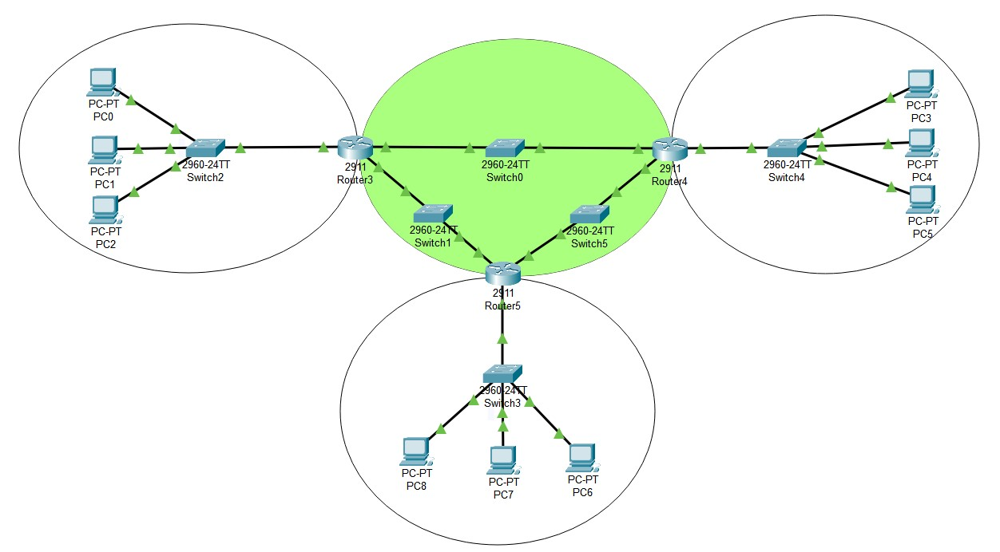

Лабораторные работы
по дисциплине
"Интернет-технологии"
Для выполнения лабораторной работы 3 потребовалось построить виртуальную локальную сеть в
Cisco Packet Tracer.
По итогу получилось создать сеть, состоящую из 4-х отделов, в которых вручную были
прописаны IP адреса, а также была реализована динамическая маршрутизация по протоколу RIP.
Визуализация полученной сети.

Таблица данных об устройствах.
| Название устройства | Интерфейс | IP адрес | Маска подсети | Шлюз по умолчанию |
|---|---|---|---|---|
| PC-PT PC0 | Fa0 | 192.168.32.1 | 255.255.255.0 | 192.168.32.254 |
| PC-PT PC1 | Fa0 | 192.168.32.2 | 255.255.255.0 | 192.168.32.254 |
| PC-PT PC2 | Fa0 | 192.168.32.3 | 255.255.255.0 | 192.168.32.254 |
| 2960-24TT Switch2 | Fa0/4 | vlan 1 | 255.255.255.0 | 192.168.32.254 |
| 2911 Router3 | Gig0/0 | 192.168.32.254 | 255.255.255.0 | RIP |
| - | - | - | - | - |
| PC-PT PC3 | Fa0 | 192.168.25.4 | 255.255.255.0 | 192.168.25.254 |
| PC-PT PC4 | Fa0 | 192.168.25.5 | 255.255.255.0 | 192.168.25.254 |
| PC-PT PC5 | Fa0 | 192.168.25.6 | 255.255.255.0 | 192.168.25.254 |
| 2960-24TT Switch4 | Fa0/1 | vlan 1 | 255.255.255.0 | 192.168.25.254 |
| 2911 Router4 | Gig0/0 | 192.168.25.254 | 255.255.255.0 | RIP |
| - | - | - | - | - |
| PC-PT PC6 | Fa0 | 192.168.35.7 | 255.255.255.0 | 192.168.35.254 |
| PC-PT PC7 | Fa0 | 192.168.35.8 | 255.255.255.0 | 192.168.35.254 |
| PC-PT PC8 | Fa0 | 192.168.35.9 | 255.255.255.0 | 192.168.35.254 |
| 2960-24TT Switch3 | Fa0/4 | vlan 1 | 255.255.255.0 | 192.168.35.254 |
| 2911 Router5 | Gig0/0 | 192.168.35.254 | 255.255.255.0 | RIP |
| - | - | - | - | - |
| 2911 Router3 | Gig0/1 | 172.27.0.1 | 255.255.0.0 | RIP |
| Gig0/2 | 172.18.0.1 | 255.255.0.0 | RIP | |
| 2911 Router4 | Gig0/1 | 172.27.0.2 | 255.255.0.0 | RIP |
| Gig0/2 | 172.29.0.2 | 255.255.0.0 | RIP | |
| 2911 Router5 | Gig0/1 | 172.18.0.2 | 255.255.0.0 | RIP |
| Gig0/2 | 172.29.0.1 | 255.255.0.0 | RIP | |
| 2960-24TT Switch0 | Fa0/1 | vlan 1 | 255.255.0.0 | RIP |
| Fa0/2 | vlan 1 | 255.255.0.0 | RIP | |
| 2960-24TT Switch1 | Fa0/1 | vlan 1 | 255.255.0.0 | RIP |
| Fa0/2 | vlan 1 | 255.255.0.0 | RIP | |
| 2960-24TT Switch5 | Fa0/1 | vlan 1 | 255.255.0.0 | RIP |
| Fa0/2 | vlan 1 | 255.255.0.0 | RIP |